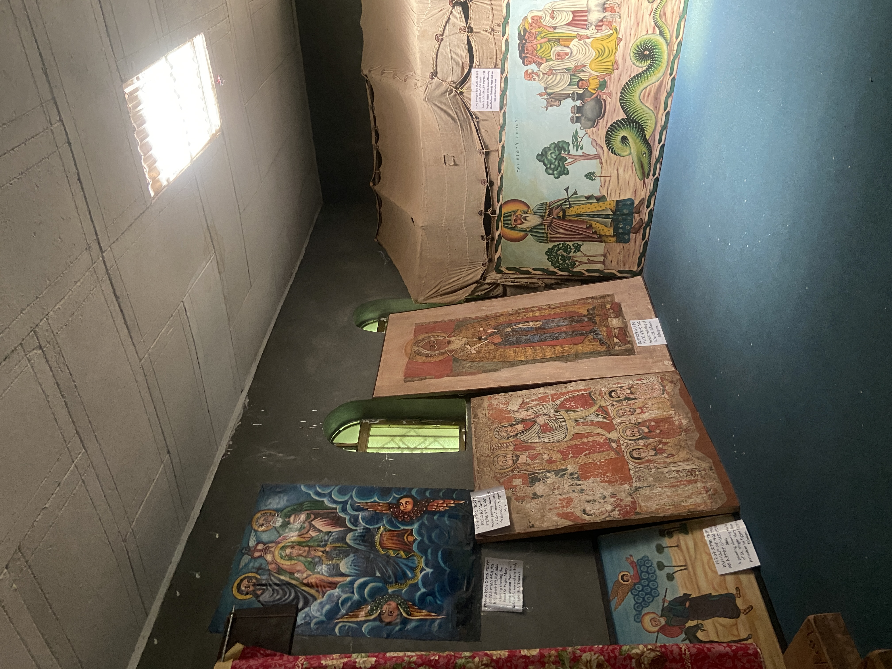

Lake Tana, Bahir Dar has served as the spiritual heart of the Ethiopian Orthodox faith. Comprising 37 islands with 27 housing monasteries, churches, and the remnants of palaces, it holds immense historical significance as some of the oldest structures in the region. The Lake Tana Monasteries within it are home to many religious artifacts.
From when I was growing up in Ethiopia to whenever my family and I went back to visit, we always made a trip to the monasteries via boat and hike to pray and pay our respects to the churches. We went again this past summer and had the privilege of seeing the collection of religious paintings, clothing, and artifacts that the monasteries have preserved. The difference in the display, labeling, explanation, and overall atmosphere is indicative of how sacred the objects are and how they are meant to be seen. The pieces are found in two small rooms resting on the floor, hanging on the aged walls, encased by hand crafted furniture, and perched atop structures as old as the art itself. Their descriptions are written in Amharic first and foremost, with English translations below. The only guide is one of the people who resides at the monastery and narrates the extensive history behind each piece in Amharic. Without the use of glass cases and rigid organization seen in the MET, we could take a closer look at the art and have a deep appreciation for it while still respecting its placement. Additionally, access to the collection is free and any voluntary donations go directly to the people living there.